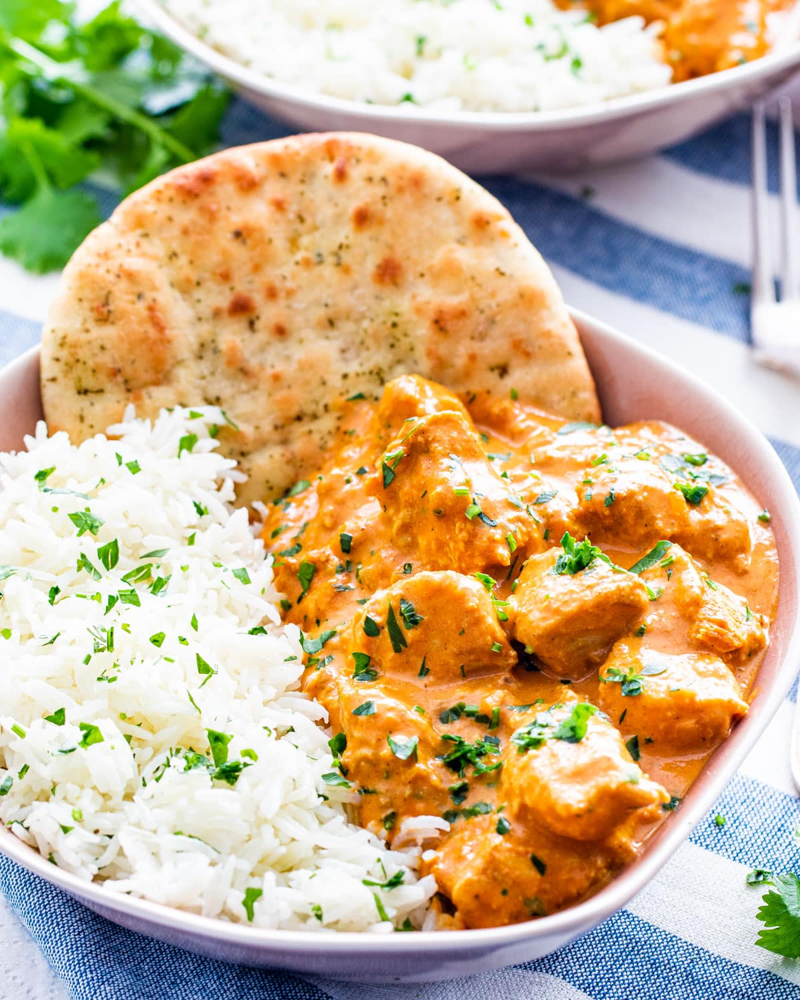

Butter Chicken

Description
Butter chicken, traditionally known as murgh makhani (pronounced [mʊrɣ ˈməkʰaːni]),
is an Indian dish originating in New Delhi.[1][2] It is a type of curry made from chicken
with a spiced tomato and butter (makhan) sauce. Its sauce is known for its rich texture.
It is similar to chicken tikka masala, which uses a tomato paste
Ingredients
Marinade
- 1/2 cup plain yoghurt , full fat
- 1 tbsp lemon juice
- 1 tsp tumeric powder
- 2 tsp garam masala (Note 1)
- 1/2 tsp chilli powder or cayenne pepper powder (Note 2)
- 1 tsp ground cumin
- 1 tbsp ginger, freshly grated
- 2 cloves garlic, crushed
- 1.5 lb / 750 g chicken thigh fillets, cut into bite size pieces
Curry
- 2 tbsp (30 g) ghee or butter, OR 1 tbsp vegetable oil
- 1 cup tomato passata (aka tomato puree)
- 1 cup heavy / thickened cream
- 1 tbsp sugar
- 1 1/4 tsp salt
Steps
- Optional blitz: for an extra smooth sauce, combine the Marinade ingredients (except the chicken) in a food processor and blend until smooth. (I do not do this)
- Marinade:Combine the Marinade ingredients with the chicken in a bowl. Cover and refrigerate overnight, or up to 24 hours (minimum 3 hrs).
- Cook chicken: Heat the ghee (butter or oil) over high heat in a large fry pan. Take the chicken out of the Marinade but do not wipe or shake off the marinade from the chicken (but don’t pour the Marinade left in the bowl into the fry pan).
- Place chicken in the fry pan and cook for around 3 minutes, or until the chicken is white all over (it doesn’t really brown because of the Marinade).
- Sauce:Add the tomato passata, cream, sugar and salt. Also add any remaining marinade left in the bowl. Turn down to low and simmer for 20 minutes. Do a taste test to see if it needs more salt.
- Garnish with coriander/cilantro leaves if using. Serve with basmati rice.